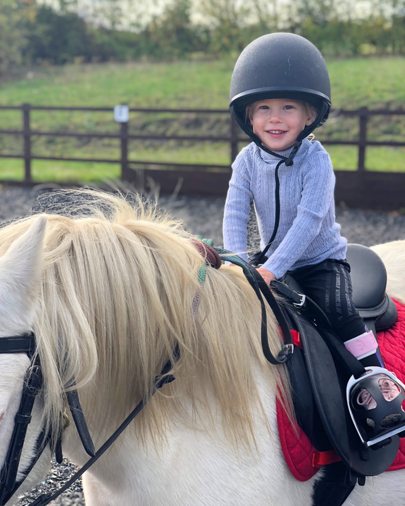

Amelia
United Kingdom Cerebral PalsyI am Amelia, I am a survivor, I am a warrior.
I have hemiplegic cerebral palsy but that does not define who I am.
When I was born I had a stroke that left me with brain damage and a very grey cloud hung above my potential. The doctors said I may never walk, I may never talk and not to expect me to be a sporty person.
Yet I’m here, I’m 3 and I can do all those things and more.
My hemiplegia effects the whole of my left side but my persistence, determination and resilient attitude makes me see that my physical disabilities are not limitations but my new goals. I am beautiful girl with a can do attitude and a perpetual smile.
Get involved Back to all stories